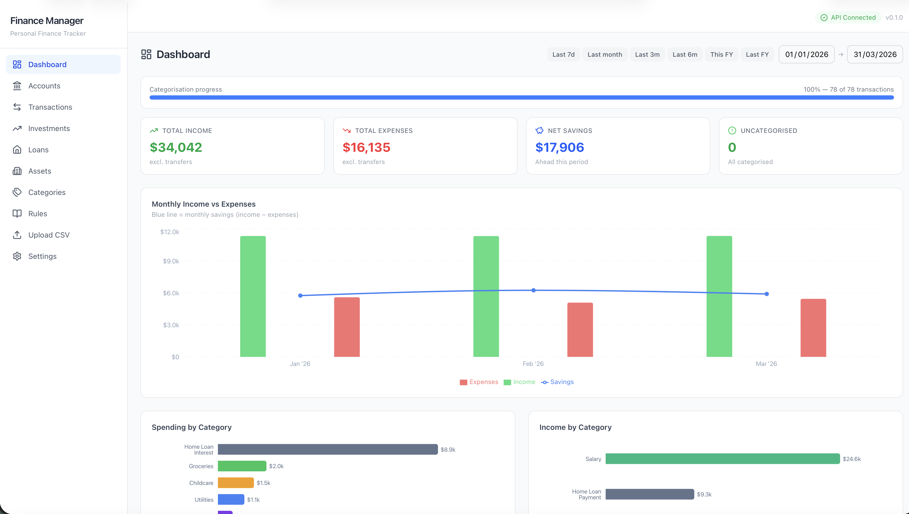
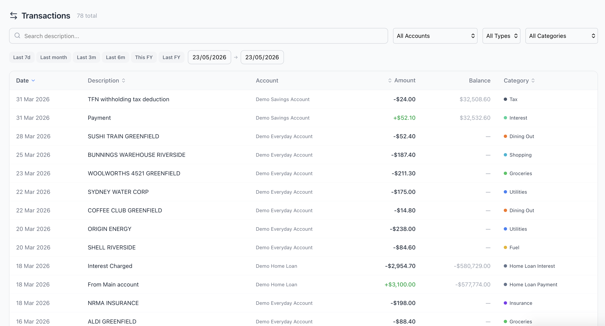
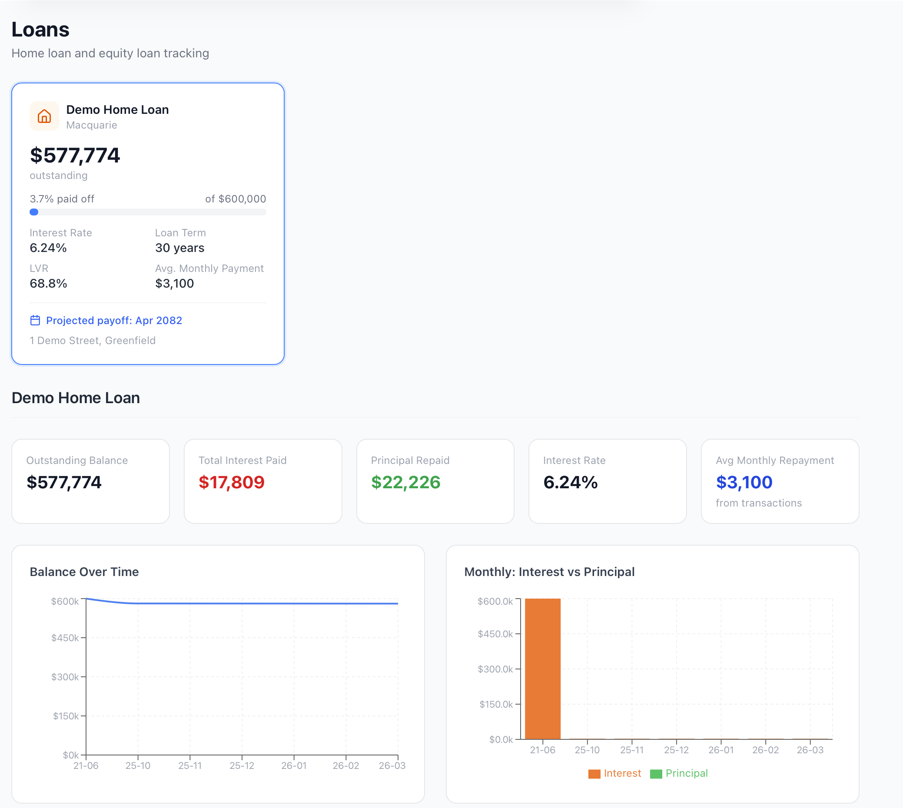
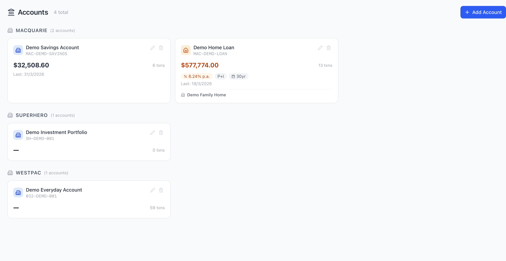
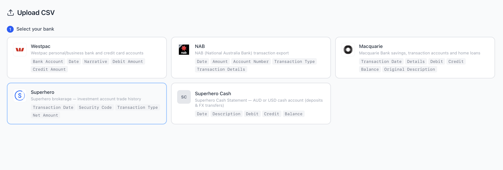
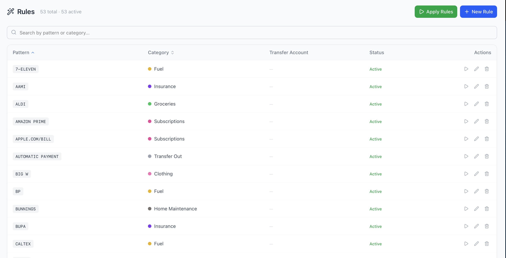

Import bank CSVs, auto-categorise transactions, track home loans, and monitor your stock portfolio — all running locally on your Mac. No cloud. No subscription. No data leaving your machine.

Built for Australians. Works with the banks and platforms you already use.
Drop in your CSV export and FinHQ auto-detects the bank. Westpac, NAB, Macquarie, and Superhero brokerage supported — more coming.
53 built-in rules cover common Australian merchants — Woolworths, Bunnings, ALDI, Bupa, and more. Rules learn from your corrections over time.
Monthly income vs expenses charts, category breakdowns, savings trends, and a categorisation progress bar. Filter by any date range with one click.
Link your loan account to a property asset. Track outstanding balance, interest paid, principal repaid, LVR, and projected payoff date.
Import Superhero trade history. See holdings, cost basis, unrealised gains, dividend income, and annualised return — per security and portfolio-wide.
Create pattern-based rules to auto-categorise future transactions. Bulk re-categorise existing transactions with a single click.
Automatically links transfers between your own accounts so they don't distort your income or expense totals.
Bank accounts, savings, credit cards, home loans, and investment accounts — all in one place, grouped by institution.
Runs entirely on your Mac. Your financial data never leaves your machine. No accounts, no API keys, no cloud storage required.
A clean, fast interface designed for daily use.

Search, filter by account or category, sort by any column, and categorise inline — one transaction or many at once.

Balance over time, interest vs principal breakdown, LVR, and projected payoff date from your actual repayments.

All your accounts in one view — bank, credit card, home loan, and investment — grouped by institution.

Select your bank, drop in the file, and map accounts. FinHQ auto-detects the format and deduplicates on re-import.

53 built-in rules for common Australian merchants. Add your own, edit patterns, and apply in bulk.
No infrastructure to manage. No accounts to create. Just clone and go.
Clone the repo, run ./run.sh setup then ./run.sh start. Docker spins up MariaDB; the backend and frontend start automatically.
Download a CSV export from your bank's internet banking. Westpac, NAB, Macquarie, and Superhero are supported — the format is auto-detected on upload.
Drag the CSV into FinHQ. Rules auto-categorise the transactions instantly. Review anything uncategorised and create new rules as you go.
Pick a date range and your income, expenses, savings, and category breakdowns appear immediately. Filter to any period, account, or category.
Supported banks & platforms
Requirements: macOS · Docker Desktop · Python 3.11+ · Node 18+
FinHQ was built because no existing app could be fully trusted with sensitive financial data. So we made one that never needs to be.
The FastAPI backend and MariaDB database run on your machine via Docker. Nothing is sent to any server — not even telemetry.
No login, no email, no OAuth. Single-user, single-machine. Just you and your data.
MIT licensed and free forever. No freemium tier, no feature paywalls, no "Pro" plan.
Every line of code is on GitHub. Audit it, fork it, extend it. You're in control.
Clone the repo and have your finances organised in under 10 minutes.